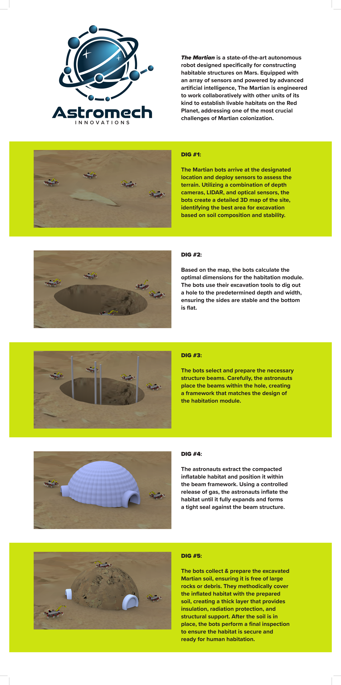
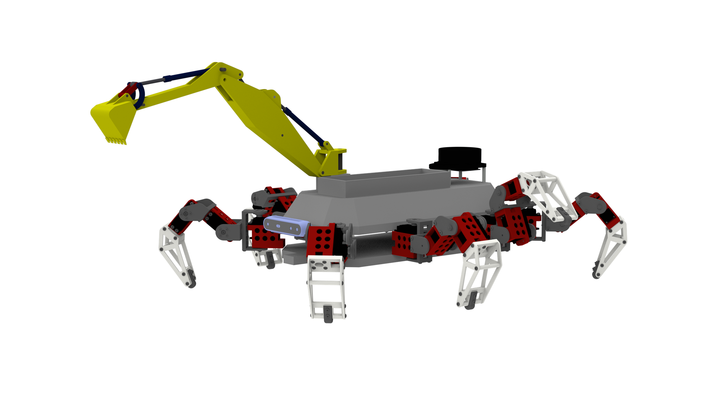
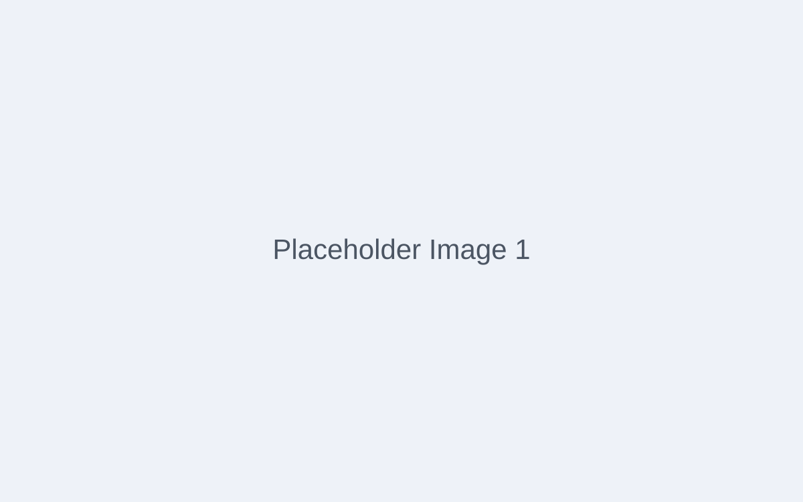

Case Study
The M.A.R.T.I.A.N Bot
Modular Automated Robotic Technology for Infrastructure Assembly & Navigation — an autonomous robot that builds underground habitats on Mars using the planet's own soil.
TL;DR
- Role
- Sole Designer & Researcher
- Team
- Solo — Capstone project, Prof. Walter Zesk, JWU
- Duration
- Full semester (Capstone)
- Tools
- ROS 2, Gazebo, URDF/xacro, Rhino 3D, topology optimization, Python, CMake
- Outcome
- Complete robot design with 5-step autonomous construction workflow, topology-optimized structure, and full simulation validation
Problem
Building permanent habitats on Mars is one of the defining design challenges of the next century. Astronauts can’t oversee every weld and joint—communication latency with Earth averages 12–24 minutes one-way, making real-time teleoperation impossible. Meanwhile, surface radiation on Mars reaches roughly 2,000 mSv—compared to Earth’s magnetosphere-protected 0.34 mSv/year—meaning habitats must be buried underground for crew safety.
My capstone brief: design an autonomous robotic system that can construct underground shelters on the Martian surface using locally sourced regolith, minimizing payload mass while maximizing construction capability. The robot must operate without real-time human control, collaborating with other units to complete multi-stage builds.
Constraints
Communication delay: No real-time corrections from Earth. The robot must plan, detect faults, and adapt autonomously.
Environment: −60 °C average surface temperature, dust storms, and abrasive regolith that accelerates mechanical wear.
Mass budget: Every kilogram launched to Mars costs roughly $54,000. The design had to minimize actuator count and structural mass while maintaining a useful work envelope.
Simulation fidelity: Physical prototyping in Martian conditions is impossible, so the entire validation loop had to run inside Gazebo with accurate physics, gravity, and sensor noise models.
My Role
This was my capstone project under Professor Walter Zesk at Johnson & Wales University. I conceived, designed, and developed the entire robot concept solo—from the initial design charrette (conducted across Prof. Zesk’s capstone class and Prof. Ozzy’s Emerging Design Technologies class) through the final 16×33″ presentation board.
I owned every deliverable: problem-space definition, kinematic architecture, sensor-suite selection, the 5-step DIG construction workflow, topology-optimized structural components, URDF/xacro robot description, ROS 2 simulation pipeline, and the “Astromech Innovations” branding.
Approach
I started with a design charrette to brainstorm space-exploration prototyping ideas, then narrowed to a minimal-payload philosophy: use naturally available Martian materials (regolith) for construction instead of shipping building materials from Earth.
The M.A.R.T.I.A.N Bot is an 8-legged autonomous robot equipped with depth cameras, a LIDAR scanner, optical sensors, an excavator arm, and a collection bucket. It follows a 5-step DIG construction process:
- DIG #1 — Terrain Assessment: Sensor fusion (LIDAR + depth cameras) generates a 3D terrain map. The robot identifies optimal excavation sites based on soil composition and structural stability.
- DIG #2 — Excavation: Optimal dimensions are calculated and the robot digs the underground shelter cavity using its excavator and collection bucket.
- DIG #3 — Framework: Structural beam framework is placed inside the cavity to provide the skeleton for the habitat.
- DIG #4 — Habitat Deployment: An inflatable habitat module is deployed within the beam structure, creating sealed living space.
- DIG #5 — Burial: Excavated Martian soil is piled back over the habitat for thermal insulation, radiation shielding, and structural reinforcement.
The robot’s structural components were run through topology optimization to maximize strength-to-weight ratio—critical when every gram costs $54,000 to launch. The design supports multiple M.A.R.T.I.A.N units working collaboratively on the same site via X-band radio communication.
Key Decisions
8 legs over wheels: Mars terrain is rocky and uneven. An 8-legged walking platform provides superior stability on slopes and the ability to step over obstacles that would immobilize wheeled rovers. Each leg is independently actuated, giving the robot stable footing during excavation loads.
Underground construction over surface domes: Surface structures require massive radiation shielding shipped from Earth. By digging underground and backfilling with regolith, the M.A.R.T.I.A.N Bot leverages the natural shielding properties of Martian soil—an approach that dramatically reduces payload mass.
Topology optimization on structural members: Every bracket, joint housing, and leg segment went through topology optimization to remove unnecessary material while maintaining load paths. This process informed the organic, lattice-like aesthetic of the final design.
xacro parameterization for simulation: The URDF model uses xacro macros so each leg segment, joint limit, and sensor mount can be tuned by changing a single variable. This enabled rapid A/B testing in Gazebo without rewriting hundreds of lines of XML.
Iterations
Round 1 — Design Charrette: Brainstormed space-exploration concepts with classmates across two courses. Narrowed from 12 initial ideas to the autonomous underground construction robot based on feasibility, novelty, and alignment with minimal-payload philosophy.
Round 2 — Concept Development: Defined the sensor suite (LIDAR, depth cameras, optical sensors), locomotion strategy (8-legged walking), and the 5-step DIG workflow. Sketched the full construction sequence, identified interchangeable tool-head requirements, and established the Astromech Innovations brand identity.
Round 3 — Topology Optimization & Simulation: Ran topology optimization on all structural members using load cases derived from excavation forces. Built the parametric URDF/xacro model and validated kinematics in Gazebo with Martian gravity. Tuned sensor noise models and confirmed autonomous terrain-mapping worked end-to-end.
Round 4 — Final Presentation: Produced a 16×33″ presentation board and a full capstone presentation demonstrating the complete design, construction workflow, and future roadmap (regolith 3D printing, adaptive AI learning, multiple specialized robot types).
Outcome
The M.A.R.T.I.A.N Bot is a complete, production-concept robot design with a validated 5-step autonomous construction workflow, topology-optimized structure, and full ROS 2/Gazebo simulation pipeline. The project demonstrates that underground habitat construction using locally sourced regolith is a viable strategy for reducing Mars mission payload by an order of magnitude compared to surface-dome approaches.
The capstone was presented at Johnson & Wales University and represents the intersection of everything I care about: systems-level design thinking, fabrication-aware product development, and autonomous robotics serving a real human need—making Mars habitable.
Next Steps
Future development includes regolith 3D printing (sintering excavated soil into structural components on-site), interchangeable tool heads for different construction tasks, adaptive AI learning so the robot improves excavation strategy over time, and multiple specialized robot types working as a coordinated swarm. I’d also like to integrate MoveIt 2 closed-loop path planning for real-time terrain adaptation.
Project Gallery




